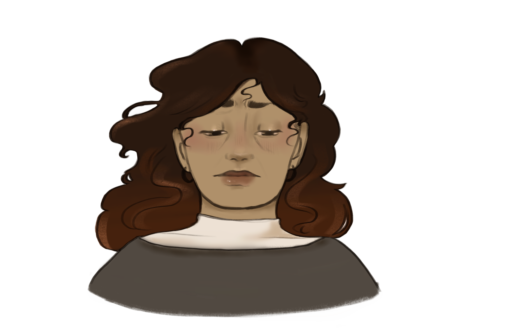
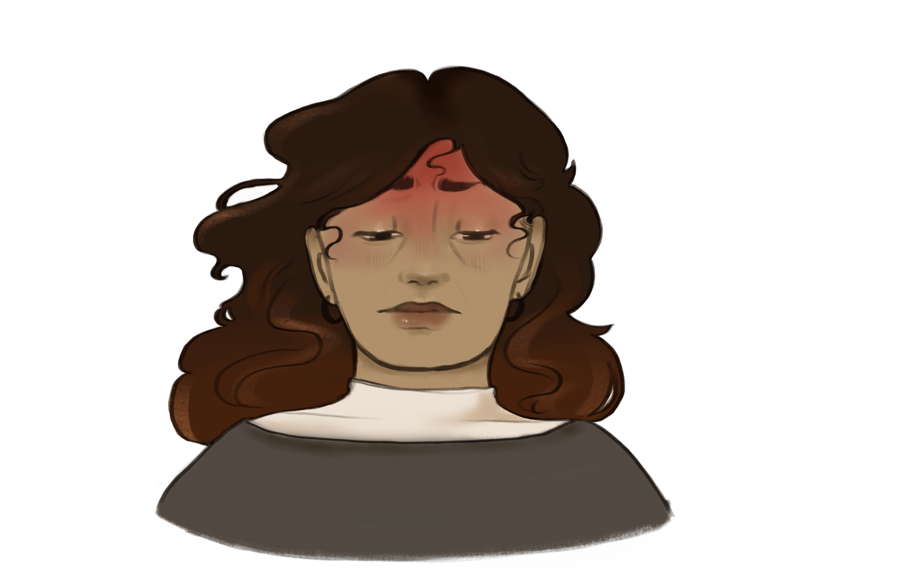
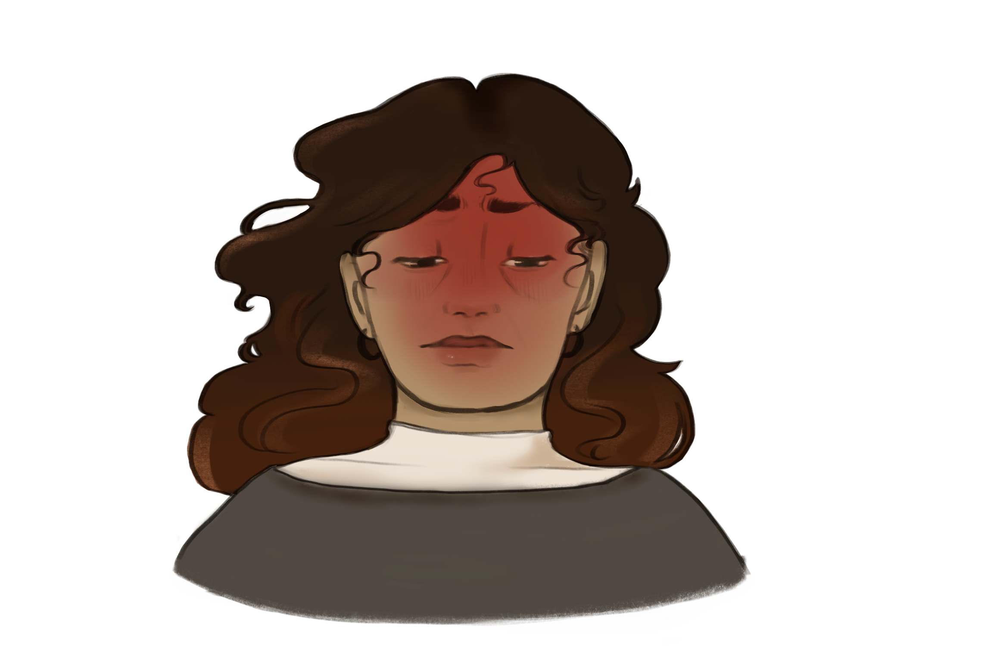
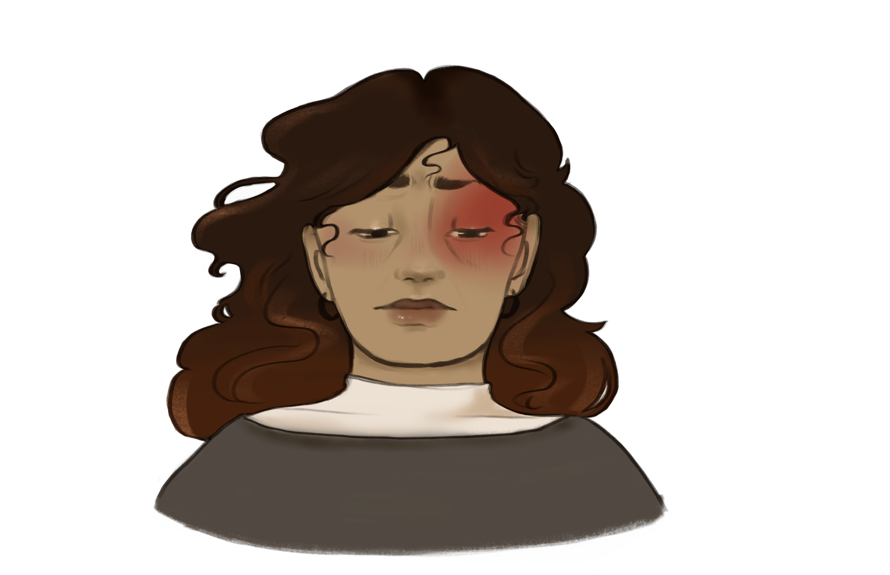

Tension headaches result from stress in jaw, shoulder, or skull muscles. The level of pain correlates to how much physical or emotional stress a person feels.
Migraines can feel different and last for different amounts of time, depending on the person. They cause “pulsing” or “pounding” pain, and often come with other symptoms, such as nausea, vomiting, and vision changes.
Cluster Headaches cause intense, explosive pain behind one eye. These headaches happen regularly for a few weeks or months in a cyclical pattern known as a “cluster.”